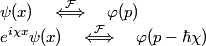

Perché è importante?
-
Un semplice esempio

- stesso modulo (quadro)
- stessa distribuzione di probabilità per la posizione
-
diversa distribuzione di probabilità per il momento lineare
- proprietà di traslazione della trasformata di Fourier...

Perché è importante?
- ...
-
proprietà di traslazione della trasformata di Fourier
-
proprietà di traslazione della trasformata di Fourier

Rappresentazione grafica di funzioni complesse
-
Per un sistema unidimensionale si traccia un grafico 3D: l’asse delle x
per la variabile indipendente; gli assi y e z per parte reale
e immaginaria della funzione
-
Nell’esempio:

- χ è dell’ordine delle centinaia
- ψ è una gaussiana la cui larghezza è nell’ordine dell’unità
- ψ è reale => giace nel piano xy secondo questa rappresentazione

-
Nell’esempio:

Rappresentazione grafica di funzioni complesse
-
Queste tecniche possono essere utili anche per rappresentare funzioni complesse di variabile complessa
(funzioni analitiche, funzioni speciali...)
- lungo una curva, o una retta,
- o in un dominio del piano complesso
-
Nella slide precedente: la funzione zeta di Riemann

- Un esempio come un altro... ;-)
Barriera di potenziale in una dimensione
-


-
Eq. di Schrödinger indipendente dal tempo

-
e sue soluzioni per E < V


Barriera di potenziale in una dimensione
con 
- Per ogni E, sei incognite: A1, A2, B1, B2, C1, C2
- Possimo imporre A1 = 1, “senza ledere la generalità”...
- “La particella proviene da sinistra” => imponiamo C2 = 0
- Le incognite si son ridotte a quattro
Barriera di potenziale in una dimensione
-
La condizione di continuità della funzione d’onda e della sua derivata in
x1, x2 equivale a 4 equazioni lineari (nelle incognite A2, B1, B2, C1)

-
Per ogni E, un sistema lineare, che facciamo risolvere simbolicamente
a Maxima

-
Un Computer Algebra System libero / open source
http://maxima.sourceforge.net/
-
Un Computer Algebra System libero / open source
Barriera 1D: calcolo numerico e simbolico
-
Dal calcolo simbolico di A2, B1, B2, C1 si ottiene:

-
L’evoluzione temporale di ciascun autostato è nota:

- Sovrapposizione (numerica) di autofunzioni, con la loro evoluzione temporale:
Barriera 1D: calcolo numerico e simbolico
-
Sovrapposizione (numerica) di autofunzioni, con la loro evoluzione temporale
-
Si è scelto


-
Si è scelto
Barriera di potenziale: risultati
L’effetto tunnel e un dettaglio del comportamento in prossimità della barriera

Free software, open standards
- Maxima: calcolo simbolico e numerico
-
 Gnuplot: per i grafici
Gnuplot: per i grafici
- Perl: come “glue language”
-
 MEncoder: per una prima codifica video
MEncoder: per una prima codifica video
-
 OGG/Theora: come formato per la distribuzione
OGG/Theora: come formato per la distribuzione
Barriera ed eff. tunnel: il codice
-
tunnel.mxm: codice Maxima-
Soluzione analitica del sistema lineare (condiz. al contorno)
-
Sovrapposizione - numerica - di autostati dell’energia

-
Soluzione analitica del sistema lineare (condiz. al contorno)
-
tunnel.dat: estratto del file di dati prodotto (~20 MB) -
anim+encode.pl: script Perl- gestisce il file di dati, invoca i programmi per il disegno e la codifica video


Buca 2D: spettro dell’energia ed evoluzione temporale
-

- infatti

- infatti
-
Evoluzione temporale
- Non resta che “plottare”!


Let’s (Gnu)plot! - il codice
-
plot.pl: script Perl-
preamble.gpi: preambolo di impostazioni - definizione di funzioni:
-
plot.gpi
-